Oregon Coast Travel Guide
Coastal region of Oregon stretches approximately 362 miles (583 km) from the California state border to the Columbia River in the north with over 80 state parks and recreation areas
Places to See in Oregon Coast

Another Believer, CC BY-SA 3.0, via Wikimedia Commons; Image Size Adjusted

Astoria, OR
Port city is the oldest city in the state of Oregon and was the first American settlement west of the Rocky Mountains
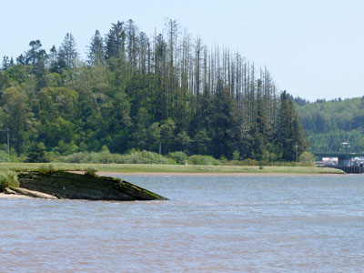
A'eron Blackman, CC BY 3.0, via Wikimedia Commons; Image Size Adjusted

Bolon Island Tideways State Scenic Corridor
11.4-acre (4.6 ha) state park is on Bolon Island 10 river miles (16 km) from the mouth of the Umpqua River
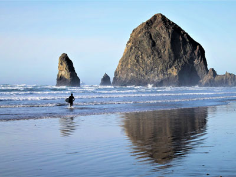
Richardmouser, CC BY-SA 4.0, via Wikimedia Commons; Image Size Adjusted

Cannon Beach
Popular coastal tourist destination famous for Haystack Rock, a 235 ft sea stack that juts out along the Pacific Coast
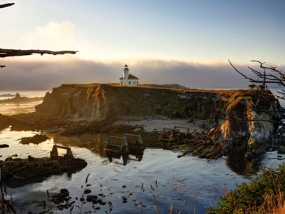
Daniel Holihan, CC BY-SA 3.0, via Wikimedia Commons; Image Size Adjusted

Cape Arago Light
Historic offshore lighthouse perched on a rugged rocky island, offering dramatic coastal views and a glimpse into maritime navigation history.
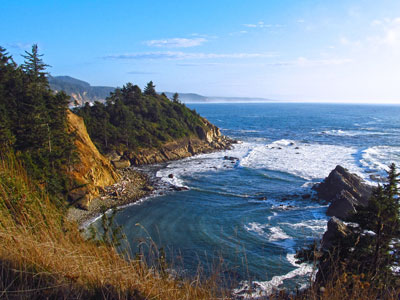
Debbie Tegtmeier, CC BY-SA 3.0, via Wikimedia Commons; Image Size Adjusted

Cape Arago State Park
State park north of Bandon and 15 miles southwest of Coos Bay on Cape Arago Highway in Coos County
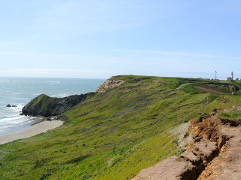
Adbar, CC BY-SA 3.0, via Wikimedia Commons; Image Size Adjusted

Cape Blanco
Prominent headland on the Pacific Ocean coast of southwestern Oregon, forming the westernmost point in the state with landforms near the cape including beaches, bluffs, and reefs
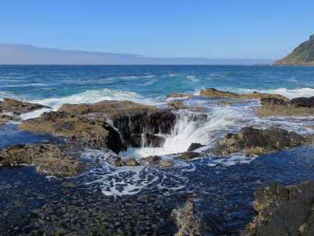
Jeffhollett, CC BY-SA 4.0, via Wikimedia Commons; Image Size Adjusted

Cape Perpetua
Large forested headland projecting into the Pacific Ocean on the central Oregon Coast
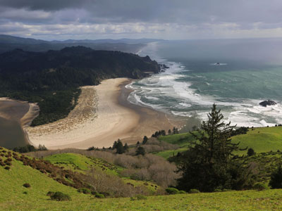
USFWS - Pacific Region, Public domain, via Wikimedia Commons; Image Size Adjusted
.jpg){kind=link}
Cascade Head
Headland and 270-acre (110 ha) UNESCO biosphere reserve, United States Forest Service Experimental Forest and a Nature Conservancy Selected Site
Cacophony, CC BY-SA 3.0, via Wikimedia Commons; Image Size Adjusted

Chetco Point
Rocky coastal overlook featuring sweeping ocean views, rugged cliffs, and easy walking paths along a scenic point extending into the Pacific.
-400.jpg)
Joe Mabel, CC BY-SA 2.0, via Wikimedia Commons; Image Size Adjusted
.jpg){kind=link}
Devils Punchbowl State Natural Area
State day use park on the central Oregon Coast and centered on a large bowl naturally carved in a rock headland which is partially open to the Pacific Ocean
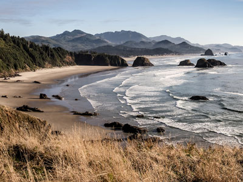
Mac H (media601), CC BY-SA 2.0, via Wikimedia Commons; Image Size Adjusted
.jpg){kind=link}
Ecola State Park
Park encompassing 9 miles of coastline between Cannon Beach and Seaside and includes Tillamook Head and part of Lewis and Clark National Historical Park
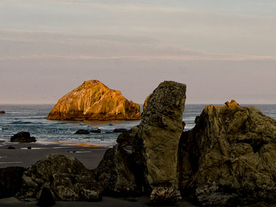
John Fowler from Placitas, NM, USA, CC BY 2.0, via Wikimedia Commons; Image Size Adjusted
.jpg){kind=link}
Face Rock State Scenic Viewpoint
State park where viewpoint's name is derived from the off-shore rock island which has the likeness of a human face and is part of a Native American legend
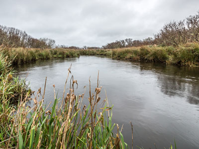
Bureau of Land Management Oregon and Washington from Portland, America, Public domain, via Wikimedia Commons; Image Size Adjusted
.jpg){kind=link}
Floras Lake
Natural 236-acre body of water on the southern Oregon Coast and fed by four small tributaries
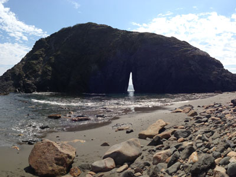
Dicie Hinaga, CC BY 3.0, via Wikimedia Commons; Image Size Adjusted

Harris Beach State Park
Home to Bird Island, which is reported to be the largest island off the Oregon Coast and is a National Wildlife Refuge and also a breeding site for rare birds such as the tufted puffin
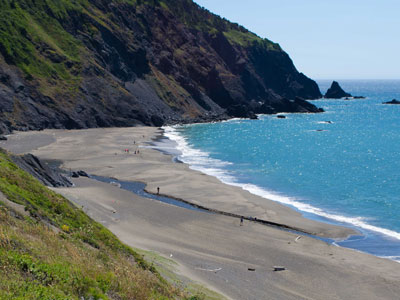
Themom51, CC BY-SA 3.0, via Wikimedia Commons; Image Size Adjusted

Humbug Mountain
One of the highest mountains in Oregon to rise directly from the Pacific Ocean, with its slopes featuring an old-growth temperate rainforest
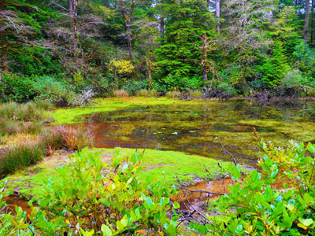
Only in Oregon, CC BY 2.0, via Wikimedia Commons; Image Size Adjusted

Jessie M. Honeyman Memorial State Park
State Park including over 200 campsites, all-terrain vehicle access, swimming, fishing and sandboarding
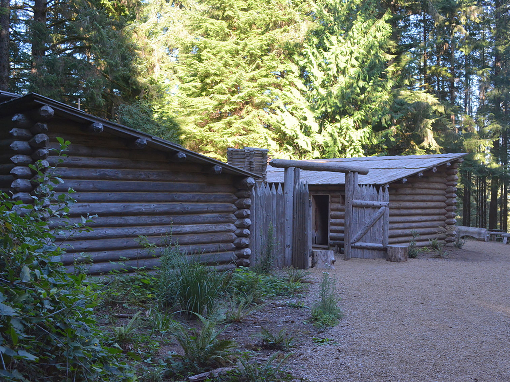
Jrozwado, CC BY-SA 4.0, via Wikimedia Commons; Image Size Adjusted
.jpg){kind=link}
Lewis & Clark Salt Works
Historic reconstruction and interpretive site commemorating the expedition's winter salt-making operation and the vital resource gathering that supported survival on the Pacific coast.
Jrozwado, CC BY-SA 4.0, via Wikimedia Commons; Image Size Adjusted
Lewis and Clark National Historical Park
Located in the vicinity of the mouth of the Columbia River, commemorates the Lewis and Clark Expedition
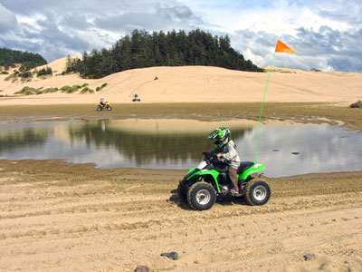
Themom51, CC BY-SA 3.0, via Wikimedia Commons; Image Size Adjusted

Oregon Dunes National Recreation Area
Vast coastal landscape featuring North America's largest expanse of coastal sand dunes, with opportunities for hiking, wildlife viewing, camping, beach access, and off-highway vehicle recreation.
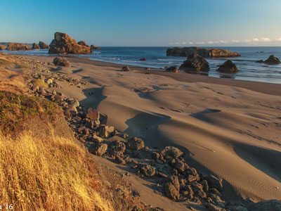
Murray Foubister, CC BY-SA 2.0, via Wikimedia Commons; Image Size Adjusted
.jpg){kind=link}
Oregon Islands National Wildlife Refuge
Wildlife Refuges providing wilderness protection to 1,853 small islands, rocks, and reefs plus two headlands, spanning 1,083 acres of Oregon's coastline from the Oregon-California border to Tillamook Head
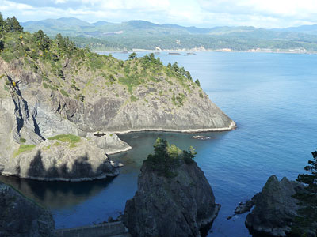
Don Henise, CC BY 2.0, via Wikimedia Commons; Image Size Adjusted

Port Orford Heads State Park
State Park is a coastal state park located on a bluff above the city of Port Orford
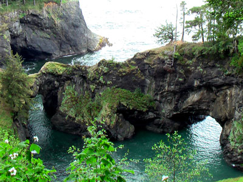
Rick McCharles, CC BY 2.0, via Wikimedia Commons; Image Size Adjusted

Samuel H Boardman State Scenic Corridor
Linear state park in southwestern Oregon 12 miles (19 km) long and thickly forested along steep and rugged coastline with a few small sand beaches
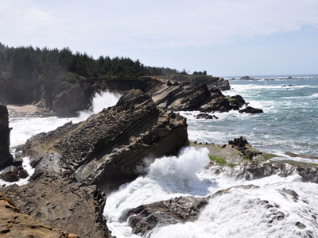
Finetooth, CC BY-SA 3.0, via Wikimedia Commons; Image Size Adjusted

Shore Acres State Park
State park runnung along the Pacific Ocean west of U.S. Route 101 and features 5 acres of formal gardens including a rose-testing plot and Japanese lily pond, as well as ocean views and beach access
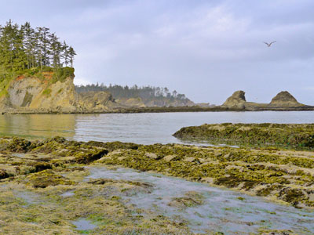
RickObst, CC BY-SA 4.0, via Wikimedia Commons; Image Size Adjusted

Sunset Bay State Park
State park 2.5 miles outside the town of Charleston on Coos Bay, offering a crescent shaped beach, tide pools, hiking trails and a year-round campground
-400.jpg)
Meghan Naxer from Eugene, OR, USA, CC BY-SA 2.0, via Wikimedia Commons; Image Size Adjusted
.jpg){kind=link}
Tillamook, OR
City known fot farmland surrounding the city used for grazing the milk cattle that supply the Tillamook County Creamery Association's production of cheese and other dairy products
Overview
The Oregon Coast runs 362 miles from the California border to the Columbia River, and all of its beaches are open to the public. Visitors come for dramatic sea stacks, cliffs, lighthouses, dunes, and tide pools, and for small fishing and artist towns along Highway 101.
The coast is the best place in the Northwest for whale watching, especially in winter and spring, and for storm watching in winter. Highlights include Astoria, Cannon Beach and Haystack Rock, Cape Perpetua, and the Oregon Dunes.
Geography
Highway 101 follows a coast of rocky headlands, sandy beaches, and river mouths, with the Coast Range rising behind. Basalt headlands and offshore sea stacks, such as Haystack Rock, give the shoreline its character. The Oregon Dunes between Florence and Coos Bay are the largest expanse of coastal sand dunes in North America. The weather is cool and often foggy, with mild temperatures year-round and heavy winter rain.
History
The Clatsop, Tillamook, Siuslaw, Coos, and Tolowa peoples lived along the coast and its rivers for thousands of years. The Lewis and Clark Expedition wintered at Fort Clatsop in 1805–06, and Astoria, founded in 1811, was the first American settlement west of the Rockies. Fishing, canneries, and logging shaped coastal towns, and the Oregon Coast Highway was built in the 1920s and 1930s with distinctive bridges designed by Conde McCullough. The 1967 Beach Bill made the entire shoreline public.
Cities and Towns
Astoria, at the mouth of the Columbia River, has a historic downtown and the Astoria Column. Cannon Beach is known for Haystack Rock and its galleries, and farther south are Tillamook, Lincoln City, Newport with its historic bayfront and aquarium, Florence, Coos Bay, Bandon, and Brookings.
National Protected Areas
Lewis and Clark National Historical Park includes the Fort Clatsop replica near Astoria. The Oregon Dunes National Recreation Area offers hiking and dune riding, and the Oregon Islands National Wildlife Refuge protects hundreds of offshore rocks and islands used by seabirds and sea lions. Cape Meares and Bandon Marsh national wildlife refuges protect more coastal habitat.
State Parks and Historic Sites
Ecola State Park has dramatic views from Tillamook Head, and Devil’s Punch Bowl is a collapsed sea cave. In the south, Cape Arago, Shore Acres, Cape Blanco, Humbug Mountain, and the Samuel H. Boardman State Scenic Corridor offer scenic headlands. Fort Stevens State Park near Astoria has a shipwreck and a military history site.
Seasons and Best Time to Visit
Summer is the driest and busiest season, though fog is common and the ocean water stays cold. Gray whales migrate past the coast from December through January and March through May, with Whale Watching Weeks around the winter and spring holidays. Fall brings clearer weather and fewer visitors. Winter storms draw storm watchers, but sneaker waves can be dangerous, so visitors should stay off logs and rocks near the water. Razor clam digging is popular in spring and fall.
This article uses material from the Wikipedia article "Oregon Coast", which is released under the Creative Commons Attribution-Share-Alike License 3.0. Additional information is from Oregon State Parks, the National Park Service page for Lewis and Clark National Historical Park, and the U.S. Fish and Wildlife Service Oregon Islands National Wildlife Refuge page.
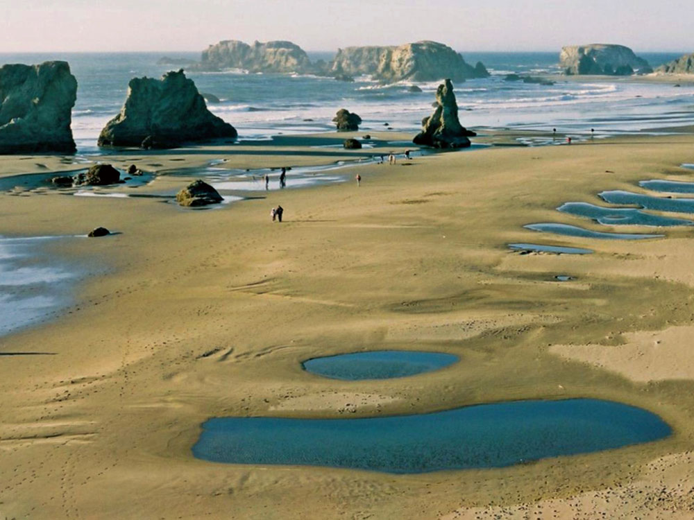
.jpg){kind=link}
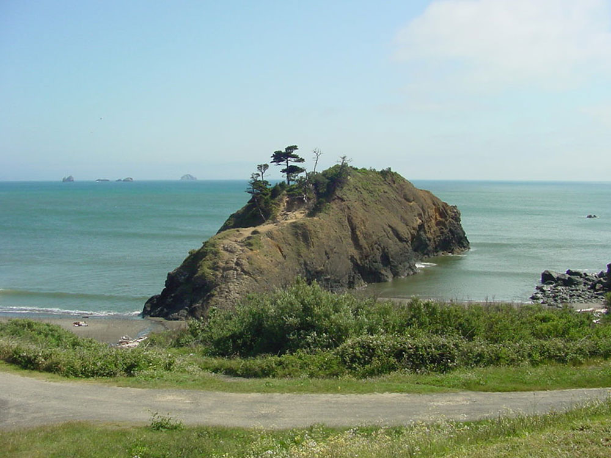
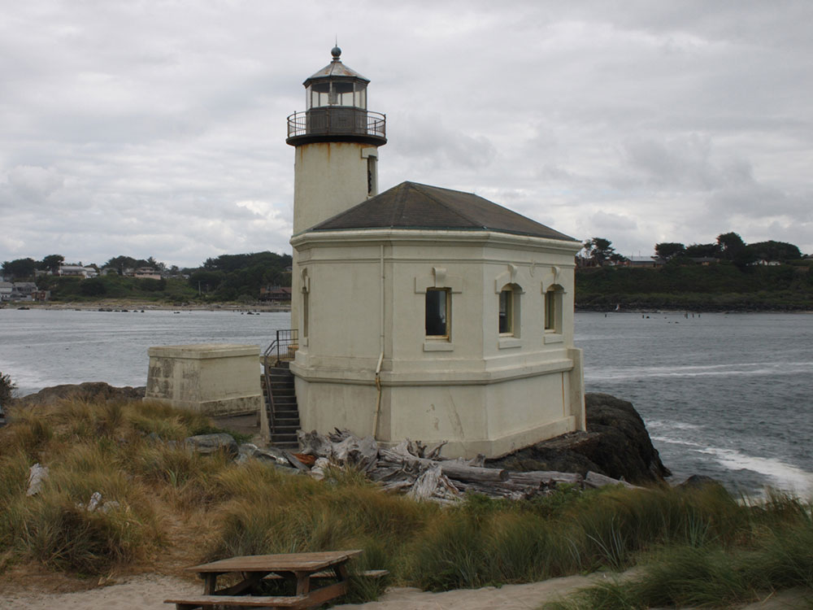
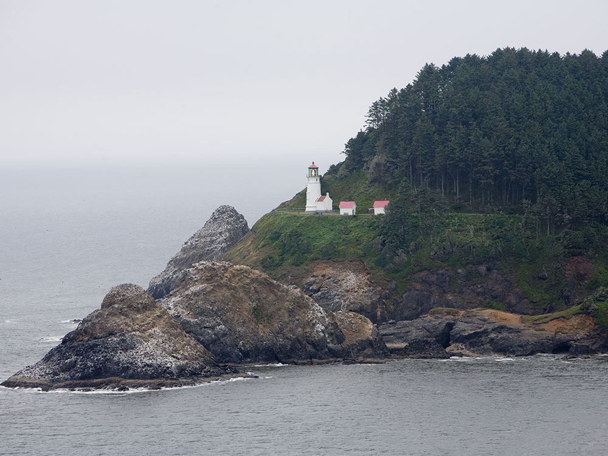
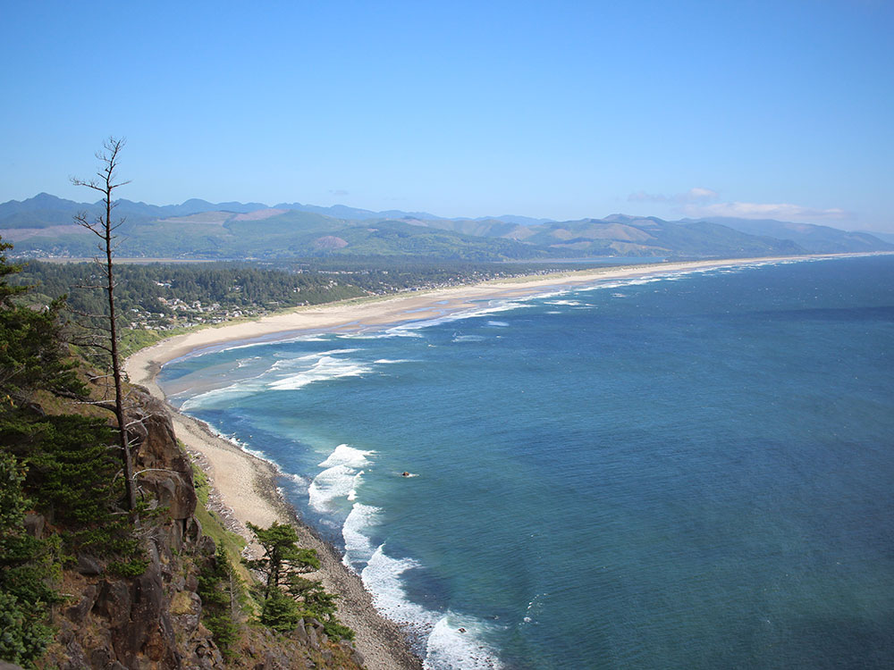
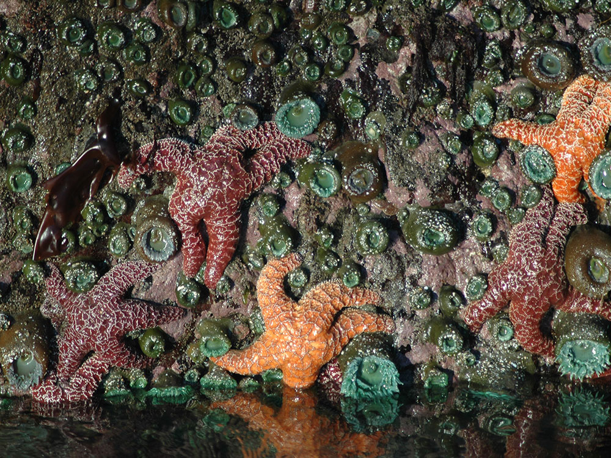
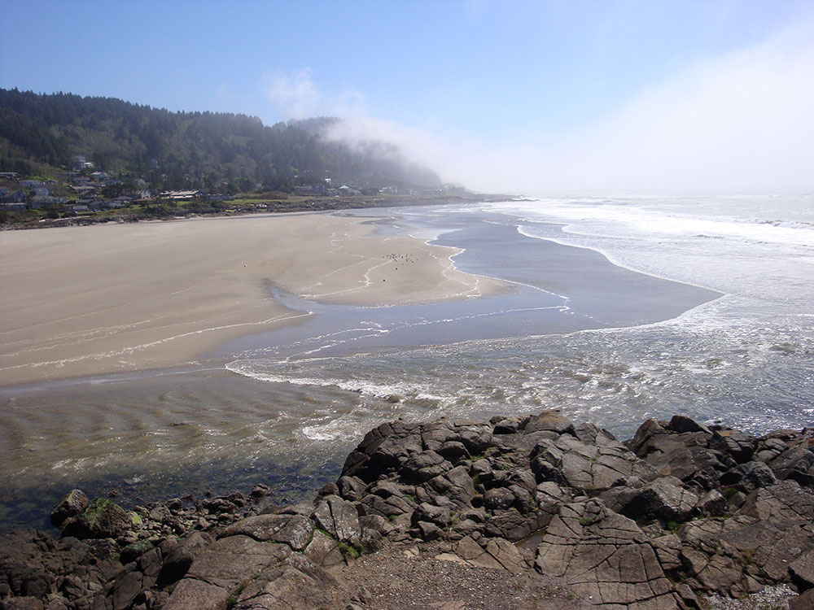